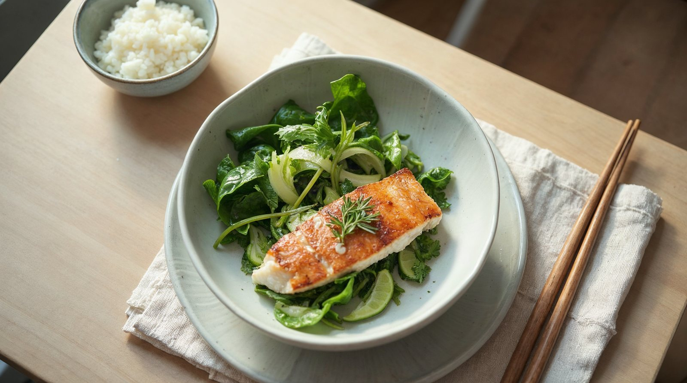

당뇨 전단계라는 안내를 받으면 식사 시간과 순서, 단 음료와 간식, 활동량을 일상의 말로 묻고 채소를 먼저 먹는 식사 순서와 식후 걷기 같은 현실적인 방법을 안내하며 정기 재검과 내과 진료를 함께 권합니다.
여쭙는 것
- 식사는 하루 몇 끼, 몇 시에 드시나요?
- 밥과 면, 빵 같은 탄수화물을 먼저 드시나요?
- 단 음료, 커피믹스, 간식은 얼마나 드시나요?
생활에서 해 볼 것
- 채소와 단백질을 먼저, 밥은 나중에 천천히 먹어 보기
- 흰쌀밥에 잡곡을 조금씩 섞어 보기
- 단 음료를 물이나 무가당 차로 바꾸기
한의원에서 함께 살필 것
- 식사 시간이 불규칙하고 먹는 양을 조절하기 어려운 경우 식사 리듬과 식욕의 흐름을…
- 식후 졸림이 심하고 오후에 단 것이 당기는 경우 식사 구성과 잠을 함께 살핍니다.
- 몸이 쉽게 지치고 손발이 찬 경우 기력과 순환, 생활 리듬을 함께 살핍니다.
먼저 확인이 필요한 신호
- 갈증과 소변량이 부쩍 늘고 체중이 줄어드는 경우
- 시야가 흐려지거나 상처가 잘 낫지 않는 경우
- 정기 재검 일정이 지났거나 수치가 계속 높게 나오는 경우

당뇨 전단계는 놀라기 쉬운 말이지만, 생활을 점검할 기회이기도 합니다. 결과를 약속하기보다 식사 순서, 간식, 식후 걷기처럼 오늘부터 바꿀 수 있는 것을 정리하고, 재검과 진단은 내과에서 받도록 함께 챙깁니다.
왜 이런 불편이 생길 수 있나요
- 밥·면·빵 같은 탄수화물을 빨리, 먼저 먹으면 식후 혈당이 가파르게 오를 수 있습니다.
- 단 음료와 커피믹스, 간식이 잦으면 하루 동안 혈당이 자주 오르내립니다.
- 식후 바로 앉거나 눕는 생활, 활동 부족과 관련될 수 있습니다.
- 잠이 부족하거나 뱃살이 늘면 혈당 조절이 어려워지는 경향이 있습니다.
자주 하는 오해
- 단것만 끊으면 된다고 생각하기 쉽지만, 흰밥이나 면, 빵을 빨리 많이 먹는 습관도 함께 살펴야 합니다.
- 과일이나 고구마처럼 몸에 좋다고 알려진 음식도 한 번에 많이 먹으면 혈당이 크게 오를 수 있어 양을 정해 드시는 편이 좋습니다.
- 운동은 한 번에 오래 하는 것보다 식사 뒤 10~15분이라도 매일 걷는 편이 생활에 붙이기 쉽습니다.
- 수치가 경계라고 해서 모두 같은 상황은 아닙니다. 가족력, 허리둘레, 잠, 복용 약에 따라 살필 점이 달라집니다.

예를 들면 이런 경우입니다
- 예를 들어 점심을 늦게, 급하게 먹고 오후 서너 시에 커피믹스와 과자를 찾는 직장인이라면, 점심을 채소와 단백질 반찬부터 먹는 순서로 바꾸고 오후 간식은 종류와 양을 미리 정해 두는 것부터 이야기합니다.
- 예를 들어 저녁은 일찍 드시는데 밤 10시쯤 과일이나 떡을 드시는 어르신이라면, 늦은 간식의 시간과 양을 일주일 기록해 보고 식후 걷기를 저녁 식사 뒤로 옮기는 방법을 함께 정합니다.
- 예를 들어 야근이 잦아 낮에는 끼니를 거르다 밤에 몰아 먹는 경우라면, 무엇을 먹는지보다 끼니 간격을 일정하게 맞추는 일을 먼저 둡니다.
먼저 이렇게 여쭙니다
- 식사는 하루 몇 끼, 몇 시에 드시나요?
- 밥과 면, 빵 같은 탄수화물을 먼저 드시나요?
- 단 음료, 커피믹스, 간식은 얼마나 드시나요?
- 식후에 움직이거나 걷는 시간이 있나요?
- 가족 중에 당뇨가 있나요?
- 하루 중 언제 단 것이 가장 당기시나요?
스스로 점검해 보세요
- 밥이나 면을 반찬보다 먼저, 빨리 먹는 편이다
- 단 음료나 커피믹스를 하루 두 번 이상 마신다
- 식사 뒤 바로 앉거나 눕는 날이 많다
- 오후나 밤에 단 것이 강하게 당긴다
- 잠이 6시간이 안 되는 날이 일주일에 여러 번 있다
- 최근 1~2년 사이 허리둘레가 늘었다
- 가족 중 당뇨가 있는 분이 있다
해당하는 것이 많을수록 생활에서 먼저 바꿔 볼 것이 많다는 뜻일 뿐, 진단을 대신하지는 않습니다.
일상에서 먼저 해 볼 수 있는 것
- 채소와 단백질을 먼저, 밥은 나중에 천천히 먹어 보기
- 흰쌀밥에 잡곡을 조금씩 섞어 보기
- 단 음료를 물이나 무가당 차로 바꾸기
- 식후 10~15분 가볍게 걷기
- 식사 시간을 규칙적으로 하고 잠을 충분히 자기
- 밥그릇을 한 치수 작은 것으로 바꿔 보기
- 간식은 봉지째 먹지 말고 먹을 만큼 덜어 두기
한의원에서 함께 살필 수 있는 경우
- 식사 시간이 불규칙하고 먹는 양을 조절하기 어려운 경우 식사 리듬과 식욕의 흐름을 함께 살핍니다.
- 식후 졸림이 심하고 오후에 단 것이 당기는 경우 식사 구성과 잠을 함께 살핍니다.
- 몸이 쉽게 지치고 손발이 찬 경우 기력과 순환, 생활 리듬을 함께 살핍니다.
좋은꿈참사랑한의원에서는 검진 결과와 하루 식사 이야기를 먼저 듣고, 필요하다고 판단될 때 당화혈색소나 인바디 770으로 흐름을 함께 확인합니다. 진맥·설진·복진으로 몸 상태를 살핀 뒤 식사 계획과 침·한약 상담 등을 상태에 맞춰 정하며, 진단과 약 처방은 내과에서 받도록 안내합니다.
첫 방문에는 검진 결과지를 함께 보며 식사, 간식, 잠, 활동을 차례로 여쭙고 진맥과 설진, 복진으로 몸 상태를 살핍니다. 필요하다고 판단되면 당화혈색소 검사와 인바디 770 체성분 측정으로 지금의 흐름을 기록해 둡니다. 다시 오시면 지난번 이야기부터 이어서 여쭈며, 정해 둔 생활 계획 가운데 무엇이 지켜졌고 무엇이 어려웠는지 함께 조정합니다.
얼마나 지켜보고, 언제 상담하면 좋을까요
- 식사 순서와 식후 걷기 같은 생활 변화는 며칠 만에 판단하기 어렵습니다. 적어도 2~4주는 이어 가며 기록해 보세요.
- 재검 시기는 내과에서 안내한 간격을 따르고, 결과지는 버리지 말고 모아 두면 흐름을 비교하기 쉽습니다.
- 갈증과 소변량이 갑자기 늘고 체중이 빠진다면 기다리지 말고 바로 내과 진료를 받으세요.
- 한 달 정도 생활을 바꿔 봐도 간식과 식욕 조절이 계속 어렵다면 상담을 받아 보셔도 좋습니다.
이렇게 기록해 오시면 상담이 쉬워집니다
- 사흘 동안의 식사 시간과 먹는 순서
- 자주 마시는 음료와 간식
- 식후 활동(걷기 시간)
- 최근 검진 결과지와 가족력
- 식후 걷기를 한 날과 하지 못한 날, 그리고 그 이유
이런 증상은 먼저 확인이 필요합니다
- 갈증과 소변량이 부쩍 늘고 체중이 줄어드는 경우
- 시야가 흐려지거나 상처가 잘 낫지 않는 경우
- 정기 재검 일정이 지났거나 수치가 계속 높게 나오는 경우
- 이미 당뇨 약을 처방받은 경우
복용 중인 약은 처방한 의사와 상의 없이 줄이거나 끊지 않습니다. 이런 증상이 있으면 내과 진료를 먼저 받으세요.
함께 읽으면 좋은 글
- 당화혈색소(HbA1c) 수치는 무엇을 뜻하나요?
- 공복혈당이 경계 수준이라고 들었을 때
- 과일은 먹어도 되나요? 당이 걱정될 때 과일 먹는 법
한눈에 보는 표
| 구분 | 핵심 |
|---|---|
| 여쭙는 것 | 식사는 하루 몇 끼, 몇 시에 드시나요? 밥과 면, 빵 같은 탄수화물을 먼저 드시나요? |
| 생활에서 해 볼 것 | 채소와 단백질을 먼저, 밥은 나중에 천천히 먹어 보기 흰쌀밥에 잡곡을 조금씩 섞어 보기 |
| 한의원에서 함께 살필 것 | 식사 시간이 불규칙하고 먹는 양을 조절하기 어려운 경우 식사 리듬과 식욕의 흐름을 함께 살핍니다. 식후 졸림이 심하고 오후에 단 것이 당기는 경우 식사 구성과 잠을 함께 살핍니다. |
| 먼저 확인이 필요한 신호 | 갈증과 소변량이 부쩍 늘고 체중이 줄어드는 경우 시야가 흐려지거나 상처가 잘 낫지 않는 경우 |
자주 묻는 질문
식사 순서를 바꾸면 혈당이 좋아지나요?
결과를 약속하지 않습니다. 식사 순서와 식후 활동 같은 생활 방법을 함께 정해 봅니다.
과일은 먹어도 되나요?
한 번에 많이 먹지 말고 양을 정해 드시고, 주스보다 생과일로 드시는 것이 일반적인 방법입니다. 수치에 따라 내과의 안내를 따르세요.
재검은 언제 하나요?
병원에서 안내한 간격에 따라 정기적으로 받으세요.
한약을 먹으면 혈당에 영향이 있나요?
처방에 따라 다를 수 있어 당뇨 전단계나 당뇨 약 복용 여부를 꼭 알려 주세요. 검진 결과와 복용 약을 확인한 뒤 신중하게 정합니다.
이 글은 일반적인 건강 정보이며 개인의 진단이나 치료를 대신하지 않습니다. 증상이 있거나 복용 중인 약이 있다면 진료를 통해 확인하세요. 치료 효과는 개인마다 다를 수 있습니다.
작성 기준: 일반적으로 알려져 있는 건강 정보를 참고해 정리했습니다(대표원장 감수). 증상 기록은 1~2주 동안 하루 1회, 비슷한 시간에 적어 오시면 지난 상태와 비교하기 쉽습니다.
좋은꿈참사랑한의원은 재진 때 지난번 이야기부터 이어서 여쭙니다. 진료시간과 예약은 오시는 길에서 확인하세요.